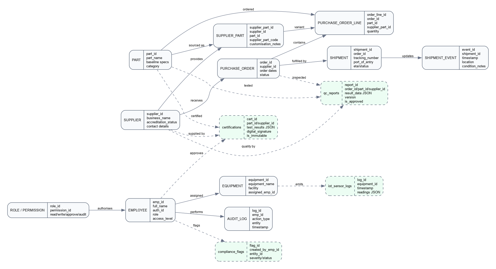
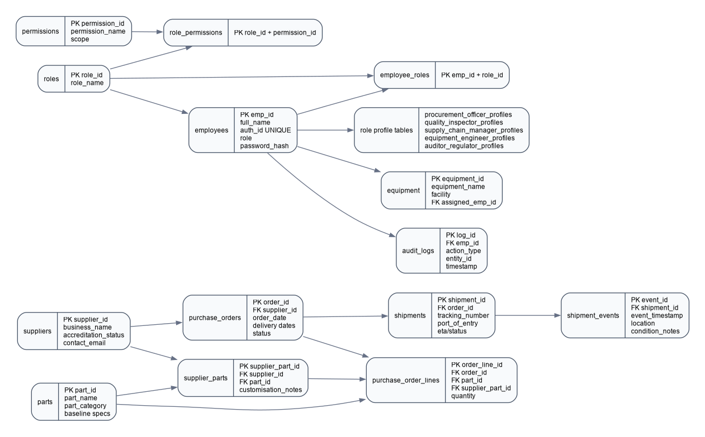
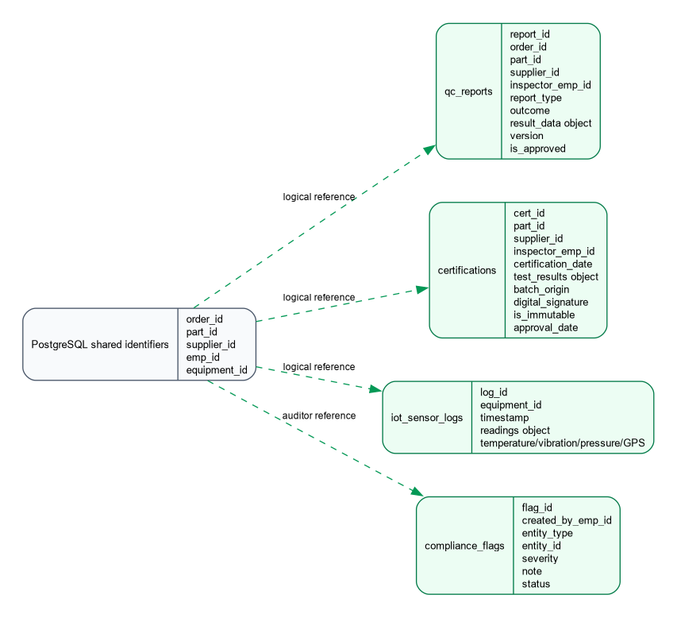

| Module | 5CM506 Data Driven Systems |
|---|---|
| Deliverable | D-I Database Design Document, continued and refined for D-II implementation |
| Student Name | Spyros Kokkoris |
| Student ID | 100774175 |
| Submission Date | May 2026 |
AeroNetB Aerospace manufactures critical commercial aircraft components including fuselage sections and wing assemblies. The company relies on a global supplier network where each supplier may provide the same baseline part with different supplier-specific customisations, inspection evidence, shipment events, and certification records.
The existing business problem is fragmented data across spreadsheets, legacy databases, and manual logs. This causes duplicated supplier/order data, weak traceability, poor real-time visibility, and inconsistent access control. The proposed system provides a single data-driven application for supplier management, order tracking, shipment monitoring, QC reporting, certification control, IoT telemetry, role-based access, and audit logging.
| ID | Objective |
|---|---|
| O1 | Maintain central supplier, part, and order records with relational integrity. |
| O2 | Model supplier-specific part variability without duplicating baseline part data. |
| O3 | Store flexible QC reports, certification payloads, and IoT readings in document collections. |
| O4 | Enforce RBAC for procurement, quality, supply chain, equipment, and audit users. |
| O5 | Make approved certifications immutable and preserve QC report version history. |
| O6 | Provide a web dashboard with live API-backed data, alerts, search, export, and role-specific views. |
The design follows the normal database design sequence: requirements analysis, conceptual ER modelling, logical relational modelling, document modelling, and implementation refinement. A hybrid architecture is used because the scenario contains both stable structured data and variable high-volume data. PostgreSQL is used for relational entities with strong keys and foreign keys. MongoDB is used for flexible JSON documents such as QC report payloads, certification evidence, IoT readings, and compliance flags.
| Requirement | Description |
|---|---|
| Supplier and part management | Suppliers have accreditation and contact information. Parts have baseline specifications. Supplier-part offerings store customisation notes and supplier part codes. |
| Orders and shipments | Purchase orders track status from placed to completed. Shipments store tracking numbers, ETA, ports of entry, and event updates. |
| Quality control | QC reports vary by inspection type. Reports are versioned and linked to supplier, part, order, and inspector identifiers. |
| Certification | Certification documents contain test results, batch origin, digital signature, and approval metadata. Approved records become immutable. |
| IoT monitoring | Equipment and transit devices produce timestamped sensor readings including temperature, vibration, pressure, and GPS data. |
| RBAC and audit | Users authenticate by auth ID. Permissions control read, write, approve, export, and audit actions. Important actions are logged with emp_id. |
| Dashboard | The UI supports shipment tracking, supplier KPIs, QC trends, IoT alerts, role-specific workflows, search, CSV export, and drill-down tables. |
The conceptual model is technology-agnostic. It identifies the main business entities, their identifiers, attributes, and relationships. Dashed entities in the diagram represent document-style domains that are linked by shared identifiers rather than relational foreign keys.

| Choice | Justification |
|---|---|
| Separate Part from Supplier_Part | The same baseline aerospace part can be sourced from multiple suppliers, but each supplier can add different features. This avoids duplication of baseline specifications. |
| Use Shipment_Event | Shipment location and condition updates are repeated over time, so they belong in a separate event entity. |
| Use Employee, Role, Permission, and Audit_Log | The scenario requires all actions to be attributable to emp_id and controlled by role-specific permissions. |
| Use MongoDB for QC, certification, and IoT payloads | These data domains contain flexible nested fields, varying measurement structures, and high-volume telemetry. |
The relational model is implemented in PostgreSQL. The schema is normalised around master data, transaction data, identity data, and audit data. Primary and foreign keys preserve integrity for suppliers, parts, orders, shipments, users, roles, equipment, and audit events.

MongoDB stores the data that changes shape or grows continuously. Documents keep shared IDs from PostgreSQL so the API can combine relational and document records in dashboard responses.

{
"report_id": "QC-2026-00004",
"order_id": 5002,
"part_id": 101,
"supplier_id": 2,
"inspector_emp_id": 202,
"report_type": "ndt",
"outcome": "FAIL",
"result_data": {
"ndt_method": "ultrasonic",
"defects_found": true,
"failure_cause": "Retest confirms edge delamination"
},
"version": 2,
"is_approved": false
}
{
"cert_id": "CERT-2026-00003",
"part_id": 104,
"supplier_id": 4,
"inspector_emp_id": 202,
"test_results": { "thermal_cycle": "PASS", "seal_integrity": "PENDING" },
"batch_origin": "Batch-PAF-2026-21",
"digital_signature": "SHA256:pending",
"is_immutable": false
}
PostgreSQL is the authoritative source for stable identifiers and relational integrity. MongoDB documents store those identifiers as logical references. The API checks relational records before creating QC reports, certifications, or IoT logs. Certification immutability and QC versioning are enforced in the backend service so the dashboard cannot bypass the rule.
The final design satisfies the AeroNetB scenario by combining a normalised PostgreSQL schema with flexible MongoDB document collections. The model supports supplier-part variability, order and shipment lifecycle tracking, quality reporting, certification traceability, IoT monitoring, RBAC, and audit logging. The design also maps directly to the implemented Node.js API and dashboard used in the D-II submission.
Connolly, T. and Begg, C. (2015) Database Systems: A Practical Approach to Design, Implementation and Management. 6th edn. Harlow: Pearson.
Fowler, M. and Sadalage, P.J. (2012) NoSQL Distilled: A Brief Guide to the Emerging World of Polyglot Persistence. Addison-Wesley.
MongoDB, Inc. (2024) MongoDB Documentation. Available at: https://www.mongodb.com/docs/
PostgreSQL Global Development Group (2024) PostgreSQL Documentation. Available at: https://www.postgresql.org/docs/
Sandhu, R., Ferraiolo, D. and Kuhn, R. (2000) The NIST Model for Role-Based Access Control.